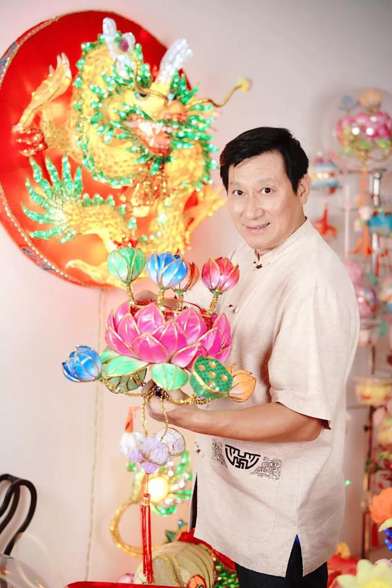
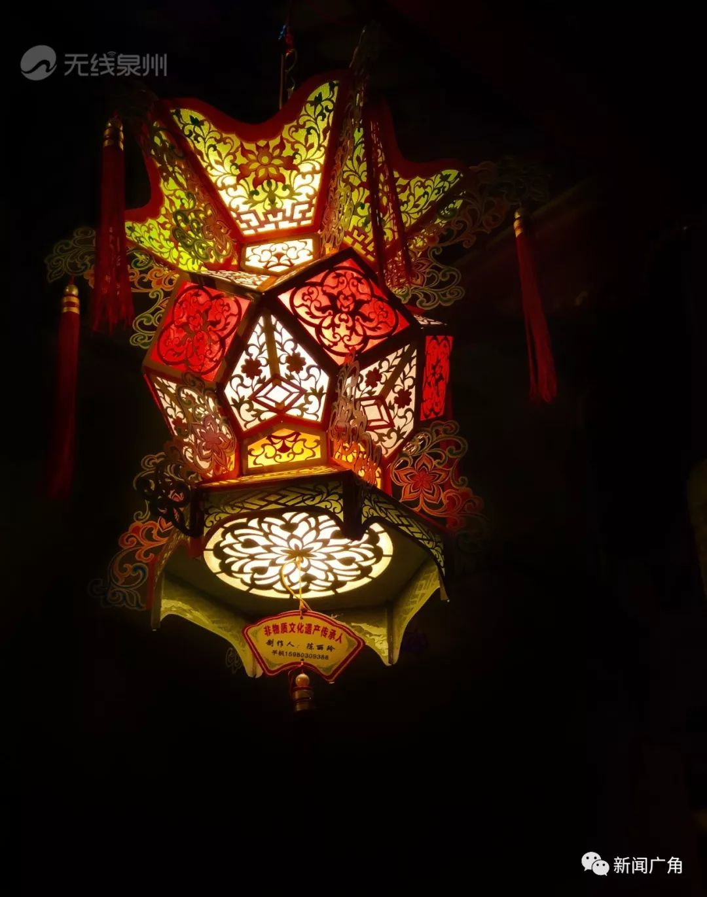
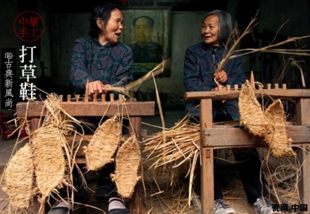
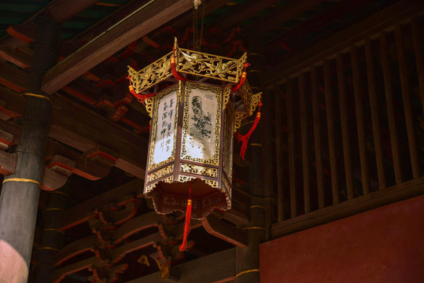
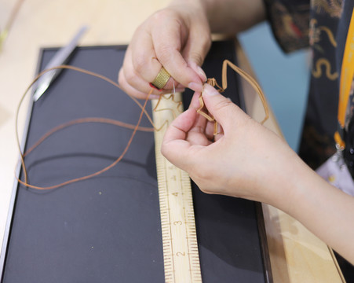
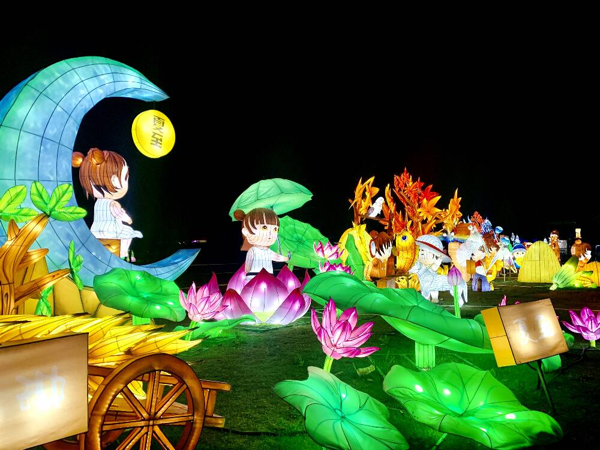

国家级非遗代表性传承人
他们是孤独的守艺人，也是时代的破局者。在这些长满老茧的双手中，中国最顶尖的花灯技艺得以在岁月长河中薪火相传。

顾业亮
【秦淮灯彩】国家级代表性传承人。自幼随父学艺，从事灯彩创作五十余载。他将传统扎灯工艺与现代声光电技术结合，曾携作品远赴50多个国家，用“向日葵花灯”惊艳海外，致力于推动秦淮灯彩的国际化传播。

许谦慎
【泉州花灯】国家级代表性传承人。1942年出生，13岁拜入工艺大师李尧宝门下。他将大半辈子奉献给泉州刻纸与花灯制作，坚守传统手工准则，其制作的料丝灯图案精密繁复，是南派花灯界的泰斗级人物。

王汝兰
【仙居花灯】国家级代表性传承人。生于1937年，数十年来执着于无骨花灯的复原与创新。她单凭一根绣花针，在卡纸上扎出万千光影，其代表作“荔枝灯”、“菊花灯”屡获国际民间手工艺大奖，令仙居绝技重现人间。

林汉彬
【潮州花灯】原国家级代表性传承人(已故)。被尊为潮州“花灯王”，尤擅长设计制作大型人物屏灯。他注重人物脸谱个性化，结合亭台楼阁使灯彩传神，并留下大量珍贵手稿资料，为潮州花灯传承做出了不可磨灭的贡献。

黄韬
【潮州花灯】80后传承人代表。在林汉彬的影响下走上花灯之路。他将传统戏剧元素与现代装置艺术融合，历时两年创作“108好汉灯屏头面”，代表着年轻一代工匠对传统非遗的接力与守望。
匠心语录
“时代在变，中国人对'年味儿'的追求没有变。机器或许能批量压制出千万个一模一样的灯壳，但只有双手扎出来的花灯，才带着人情味，才能把老祖宗的祝福，真真切切地透出光来。”
—— 传承人 顾业亮
